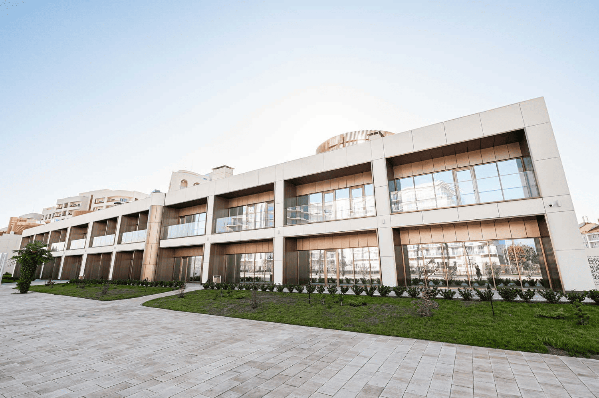

Добро пожаловать
в медицинский центр
«Сириус»!
Опытные врачи, профессиональная диагностика, лечение.
Ваше здоровье в надежных руках!
Опытные врачи, профессиональная диагностика, лечение.
Ваше здоровье в надежных руках!
Медицинский центр «Сириус» — это современная многопрофильная клиника, где мы обеспечиваем комплексный подход к здоровью каждого пациента, от детей до взрослых. Наша команда — это высококвалифицированные врачи с многолетним опытом, настоящие профессионалы своего дела, готовые оказать помощь каждому.
Вы можете обратиться за помощью по заболеванию и получить осмотр, консультацию и диагностику бесплатно в рамках программы обязательного медицинского страхования (ОМС). Для этого при посещении врача необходимо предъявить паспорт, полис обязательного медицинского страхования (ОМС) и СНИЛС.
Рады сообщить, что в Медицинском центре «Сириус» открыт прием заявлений на прикрепление с 1 января 2026 года для обслуживания по полису обязательного медицинского страхования (ОМС) в рамках территориальной программы государственных гарантий бесплатного оказания медицинской помощи гражданам.
Для прикрепления необходимо:
Прикрепление расширит ваши возможности получения медицинской помощи по полису обязательного медицинского страхования (ОМС). Кроме лечения по заболеванию доступно:
Спешите прикрепиться к современной клинике, где ваше здоровье — наш главный приоритет!
Виды и профили оказываемой помощи в Медицинском центре «Сириус»
Генеральный директор
Часы приема - Вторник с 9:00 до 12:00
Главный врач
Часы приема - Четверг с 10:00 до 12:00